Project Recovery and Debug
Contents
Project Recovery and Debug#
Overview
This module will outline how to build a recovery point and debug a FLO-2D Data Set.
Required Data
The required data is in Module 1.
File |
Content |
|---|---|
Lesson 1.qgz |
Module 1 QGIS file |
Lesson 1.gpkg |
Module 1 GeoPackage |
*.tif |
Elevation file |
Step 1: Create a recovery file#
Note: This step discusses how to set up the backup file or recovery point. Skip if these steps are already well understood.
Select the Lesson 1.gpkg and Lesson 1.qgz files and zip them. This will create a recovery file.
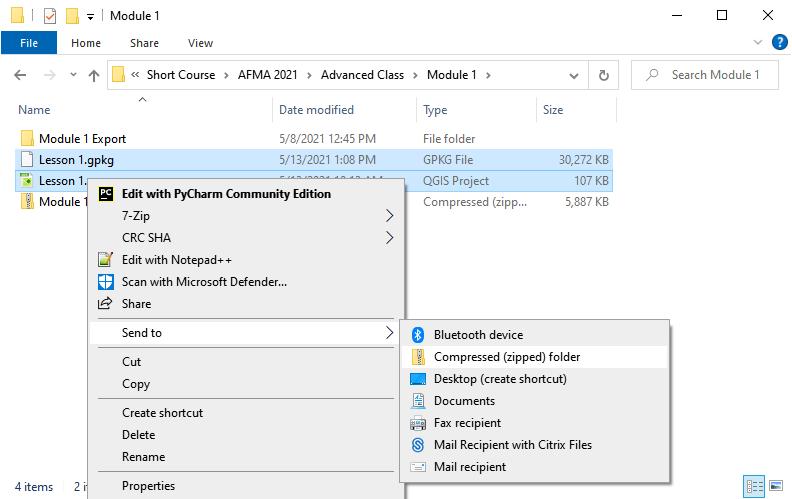
Name the zipped file. It is good to choose a name that identifies project progress. For Example: Lesson 1 n-value OK.zip.
Step 2: Recover a project#
This step is used when project data is corrupt. If a project is not exporting data correctly or a mistake is made, use this recovery method.
Select Lesson 1.gpkg and Lesson 1.qgz and delete them both.
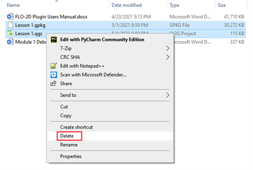
Extract the recovery files.
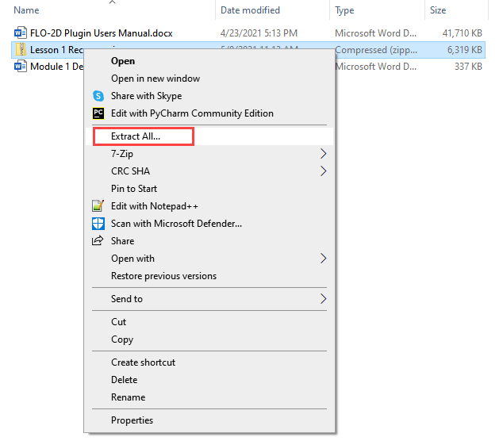
Change the name of the path so the file can be extracted directly to the Module 1 folder.
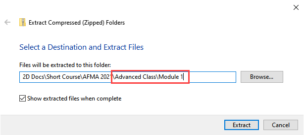
Step 3: Open the project#
Open QGIS and drag Lesson 1.qgz onto the canvas the file in QGIS and Load the Project into the FLO-2D Plugin.
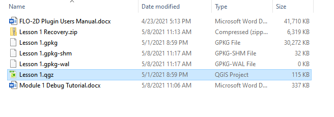
Remove unavailable layers if necessary. Autofind and browse works well to resolve paths. This step depends on where the data is located and may not show up for all users.
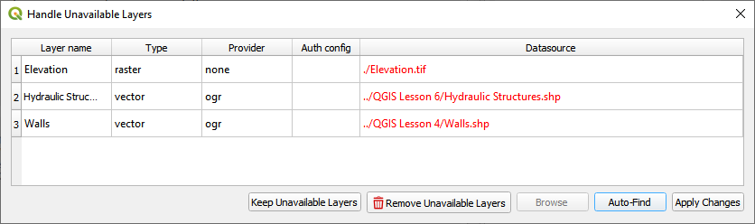
Click Yes to load the plugin. In this case the project path changed but FLO-2D helps find it.
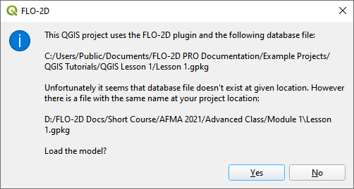
This is the complete project, but some layers are turned off.
Turn on the following layers:
Storm Drain
Blocked Areas
Storm drain conduits
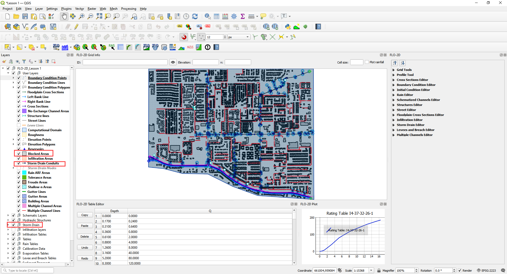
Step 4: Export the FLO-2D data#
Click the Export Button
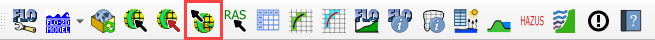
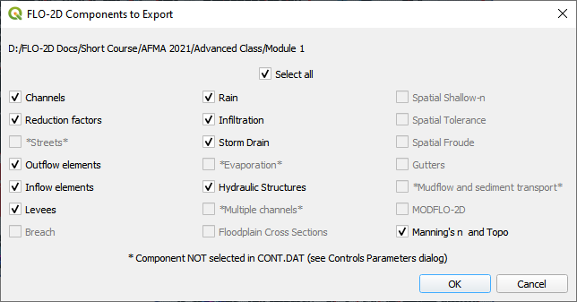
Note
If the image above does not look like the window on your screen, you may be accessing the “Lesson 1.gpkg” in the Self-Help training packages. Delete the file in QGIS Lesson 1 Folder and return to Step 3.
C:\Users\Public\Documents\FLO-2D PRO Documentation\Example Projects\QGIS TutorialsQGIS Lesson 1\Lesson 1.gpkg
Click OK and navigate to the export folder. Select the folder and export.
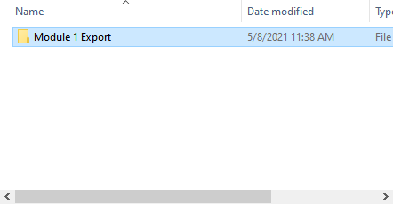
Close the message.
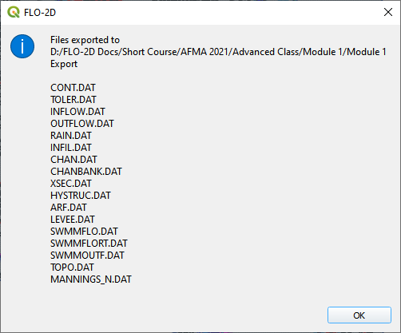
Go to the Storm Drain Widget and Export the swmm.inp file.
Collapse all widgets.
Open Storm Drain widget.
Click Export SWMM.INP… button
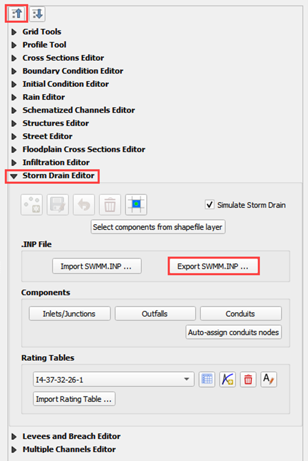
Name the file swmm.inp and click Save.
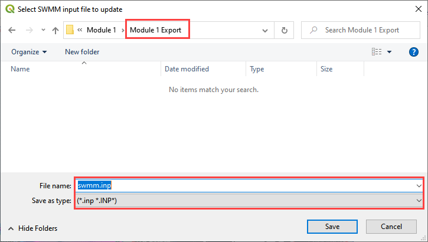
Click OK to close both windows.
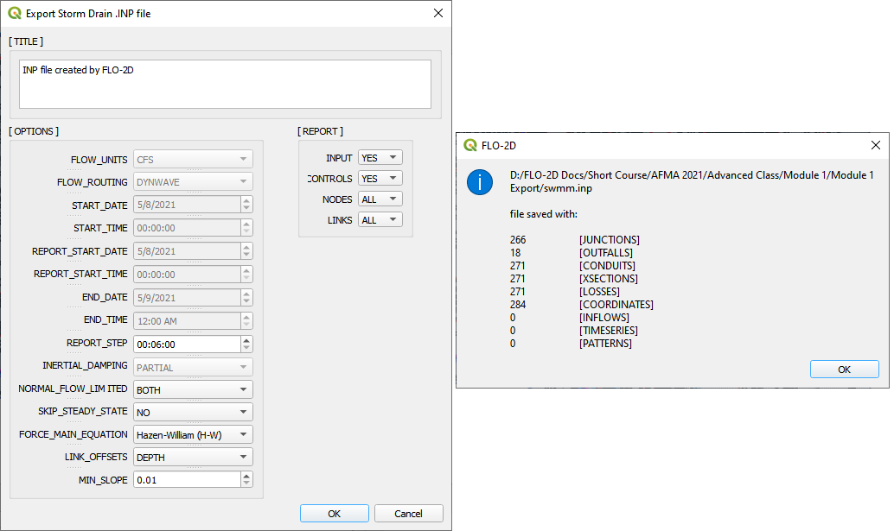
Step 5: Run the debug engine#
Click the Run FLO-2D button.
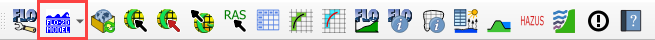
Correct the FLO-2D path click the Debug Run button.
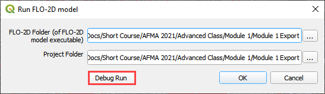
Click OK.
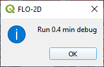
The debug run is complete when FLO-2D windows close.
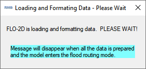
Click Cancel to close the Run FLO-2D form.
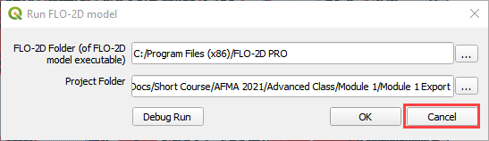
Step 6: Debug the project in QGIS#
Click the debug button.
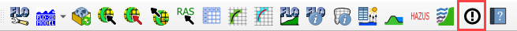
Select Debug and click OK.
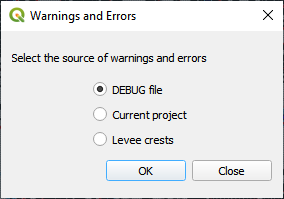
Navigate to the project folder.
Select the debug file and click Open.
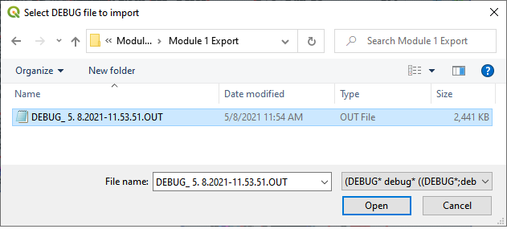
Click Yes to load the extra debug files.
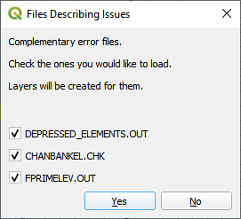
Test the filtering and navigation tools on this form.
If something breaks or stops working, simply reload by going back to the start of step 6.
Click on one of the Element cells and the map will move to that cell.
Click on a Row, and the map will not change.
Close the form after a content and sated feeling is achieved.
Step 7: Load the conflict table#
Click the debug button.
Select Current project and click OK.
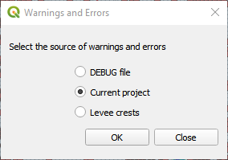
Select Storm Drain Inlets to see how the form filters the data.
Click the close button upon reaching Zen.
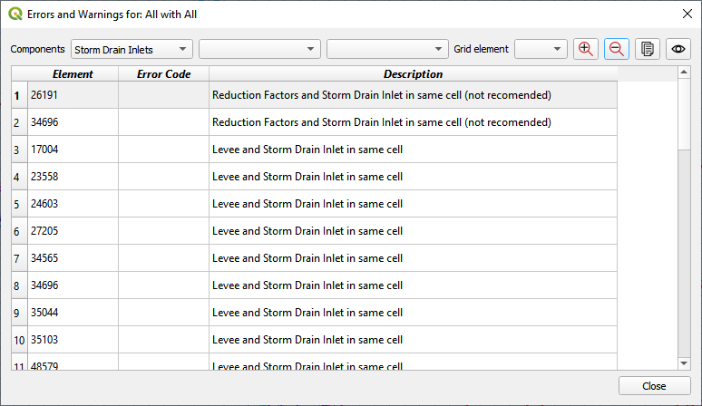
Step 8: Load the levee table#
Click the debug button.
Select Levee crests and click OK.
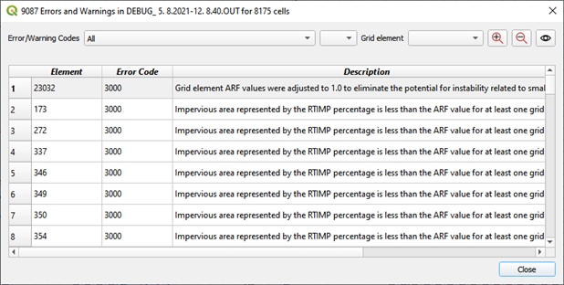
Click Close to close the form. This one is not so useful.
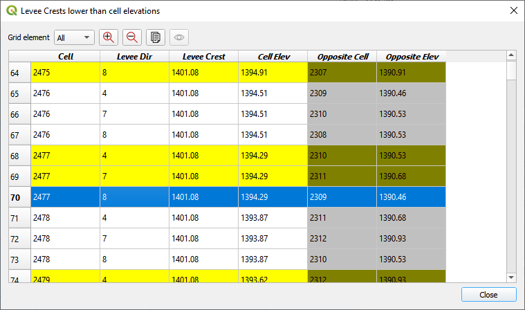
Right click the Levee Crests layer and click Open Attribute table.
The standard QGIS table has excellent filtering and zoom to features.
Close the form when if true mastery was achieved.
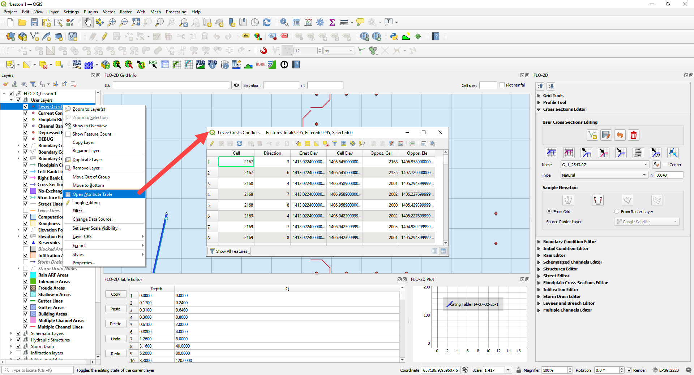